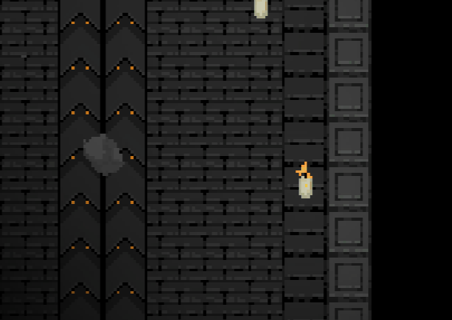
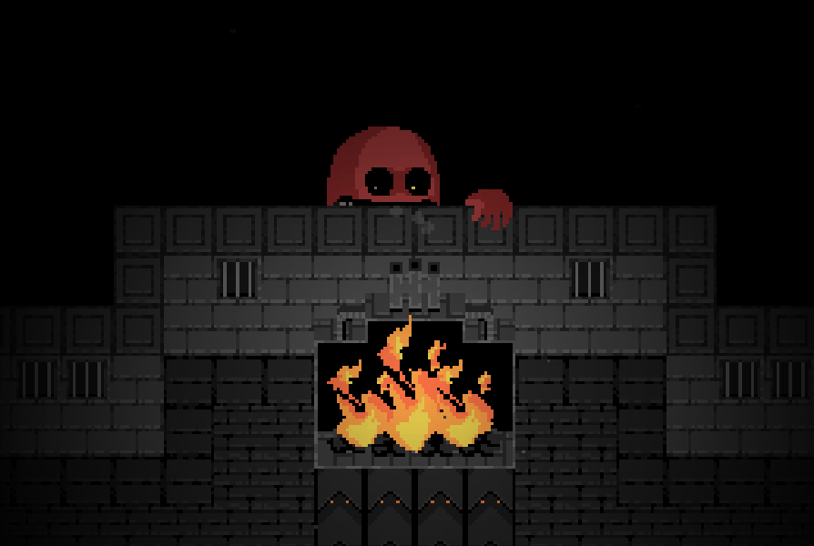

Play COBB CAN MOVE Online

COBB CAN MOVE
Launching COBB CAN MOVE
Preparing the browser build...
Keyboard: WASD to move, E / Space to interact. Headphones recommended. First load may take a few seconds.

What Is COBB CAN MOVE?
COBB CAN MOVE is a dark pixel-art top-down survival horror game. Developed by abho for Major Jam 7: Wild, where it earned #1 Overall, #1 Concept, #2 Presentation, #2 Fun. The game drops you into a dark top-down room — no cutscene, no tutorial, just a simple objective and Cobb getting closer.
The title itself is the game design philosophy condensed: “Cobb Can Move” is both a statement and a warning. Cobb does move — and how he moves changes every level. The rules aren't hidden; they're written on screen. But knowing the rules and adapting to them are two different things, separated by an entire dark room.
Unlike most horror games, COBB CAN MOVE's horror doesn't come from chase scenes, gore, or jump scares — it comes from rule uncertainty. One level Cobb only hears footsteps, so you learn to tiptoe. The next level he can suddenly smell you, while you're still carrying the muscle memory from last time.
Old habits betray you. That's the core fear of COBB CAN MOVE: not how strong Cobb is, but that yesterday's experience can never guarantee today's survival.
Core Mechanics: Rules as Horror
COBB CAN MOVE is what the community calls “mechanical horror” — fear that comes not from the monster itself, but from how the game system operates. Here are the three layers that make this design work:
Rules in Plain Sight
Every level starts with Cobb's abilities written clearly at the top of the screen — “Cobb can hear you,” “Cobb can see you.” No hidden mechanics, no random punishment. You know the threat; you just don't know how to deal with it yet.
Rules Keep Stacking
Level one: Cobb has one sense. Level two: two senses. Level three: three. One rule is manageable tension. Two rules is real pressure. Three rules is a panic test — and the decisions you make with a racing heart are exactly what Cobb is waiting for.
Failure Is Understandable
Every death tells you exactly what went wrong — “I ran too fast, he heard me,” “I thought he couldn't see me, but he had line of sight at that corner.” Death isn't random noise; it's a diagnosable mistake. This makes retries meaningful rather than frustrating.
Cobb's Four Senses Reference
Cobb's threat comes from four senses. Each level randomly activates one or more. Understanding each sense's trigger conditions and counter-strategies is the first step to survival.
| Sense | Trigger | Cobb's Behavior | Your Strategy | Danger | Signal |
|---|---|---|---|---|---|
| 👂 Hearing |
Footsteps, interaction sounds | Cobb follows sound, moving toward the noise source | Move in short bursts, pause to observe. Avoid continuous running. Use distant switches to create noise and lure Cobb away | Medium-High | Low hum when Cobb moves toward your direction |
| 👁 Sight |
Entering Cobb's line of sight | Cobb immediately turns and pursues until you break line of sight | Use walls and objects for cover. Move in darkness. Keep Cobb outside your field of view | High | Cobb's eyes always face what interests him |
| 👃 Smell |
Distance from Cobb | Tracking accuracy increases with proximity; ineffective beyond a certain range | Maintain a wide radius. Don't linger near Cobb. Plan curved routes, not straight lines | Medium | Audible sniffing sound, louder the closer you are |
| 🤚 Reach |
Entering Cobb's melee range | Cobb attacks immediately — no warning, no escape window | Always maintain extra distance. When reach is active, keep a 2-3 tile buffer on all movement | Extreme | Screen edges glow red, pressure spikes dramatically |
How to Play COBB CAN MOVE
Controls
Move: WASD or Arrow Keys. Interact: E or Space. The controls are dead simple — COBB CAN MOVE doesn't ask you to master complex combos or hotkeys. It asks you to think before you move.
Objective Loop: Read the rules → explore the room layout → collect objective items → activate switches/furnace/mechanisms → find and open the exit. Every level has the same structure, but Cobb's sense combination changes, and that changes exactly how you complete the loop.
Reading the UI
The icons in the top-right show your current visibility and noise level — these directly map to Cobb's sight and hearing. Keeping these indicators low is the key to staying alive.
The rules text at the top of the screen is the most important information in every level. First thing to do when entering a new level: stop and read the rules. Four seconds of reading saves four deaths.
6 Survival Tips for Beginners
- Read the rules before you take a single step. The rules text is your only tutorial. Can Cobb hear you? Can he see you? Can he smell you from across the room? Don't touch the keyboard until you can answer these questions.
- Short moves, frequent pauses. Continuous running creates the most noise. Move 3-4 tiles, then pause and observe — did Cobb change direction? Where are his eyes looking? Pausing isn't wasted time; it's intelligence gathering.
- Plan your escape route. Before touching any objective item, identify the nearest cover and the shortest path from that cover to the exit. Cobb doesn't pause while you grab the item — he's already behind you.
- Break the last level's habits. Every level is a new rule set. Running was safe last level; this level it might be fatal. Consciously ask yourself: “What's different about this level compared to the last one?”
- Use sound to lure Cobb away. Distant switches and interactive objects all create noise. When Cobb is drawn to the other side of the room, you get a precious window to act — but remember, the sound of you running there will also be heard.
- Failure is map data. Treat every death as intel. Where did Cobb catch you? What sense was he using? What action were you taking? Next time, adjust for that specific mistake — not a vague “be more careful.”
Rule Stacking Danger Matrix
A single rule is manageable. Stacked rules are where COBB CAN MOVE's real horror lives. Here are common rule combinations, their risk levels, and how to handle them:
Low: Hearing Alone
Cobb only hears footsteps. Control your movement rhythm and you'll clear it safely. Great for learning map layouts and item positions. Beginner-friendly.
Mid: Hearing + Sight
The most common combination. You need to manage both footstep noise and line-of-sight exposure. Use cover to block vision; move in short bursts between cover. Remember: inside Cobb's line of sight, standing still is safer than running.
Mid: Hearing + Smell
Cobb doesn't need to see you — he smells you. You need a wider orbit radius; any direction near Cobb might give you away. Plan large circular routes. Do not cut corners.
High: Sight + Reach
Cobb sees you, charges immediately, and attacks the moment you enter melee range. This combo punishes any line-of-sight exposure. Prioritize a complete cover chain — you need to know where the next cover is at every step.
High: Hearing + Sight + Smell
Three senses means Cobb covers nearly every detection axis. You must simultaneously manage noise, visibility, and distance. Strategy: prioritize eliminating noise (pause-move), then control visibility (cover chain), then maintain distance (wide orbit).
Extreme: All Four Senses
Cobb hears everything, sees everything, smells everything, kills on contact. This is the game's ultimate stress test. Only strategy: extremely patient, turn-based movement. Treat every step as an independent decision. Move → pause → observe → plan → move again.
Game Screenshots



Game Videos
Watch COBB CAN MOVE in action through these community gameplay videos:


Videos hosted on YouTube. All rights belong to their respective creators.
Player Reviews
Finally a horror game that tells me to read the text instead of relying on jump scares. The rules are right there on screen — whether you live or die depends entirely on whether you can drop the last level's habits.
Stacking senses is the genius touch. One rule feels manageable. Two rules and you start fumbling. Three rules and you realize you're holding your breath — outside the game, too.
Short runs, fast retries. Death isn't frustrating because you know exactly what you did wrong. Twenty minutes per run, but you'll play five in a row because “this time I definitely won't make that mistake again.”
The pixel art + color-shifting shaders create this distorted sense of unease. Cobb's eyes always face whatever interests him — and you always feel like that's you.
Frequently Asked Questions
The rules change. The fear stays.
Cobb is waiting in the dark. Read the rules. Control your steps. Survive.
PLAY COBB CAN MOVE